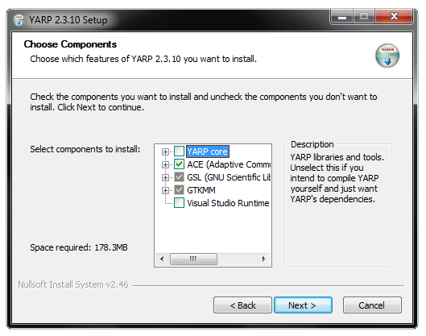
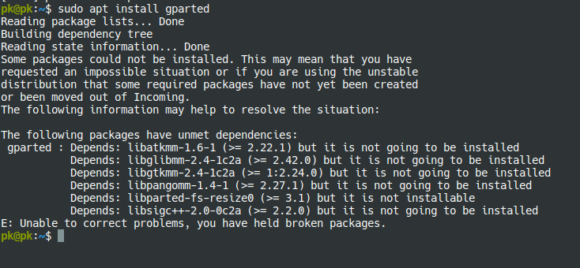
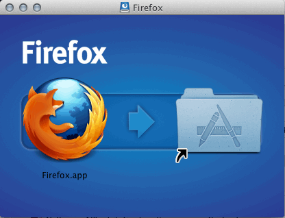
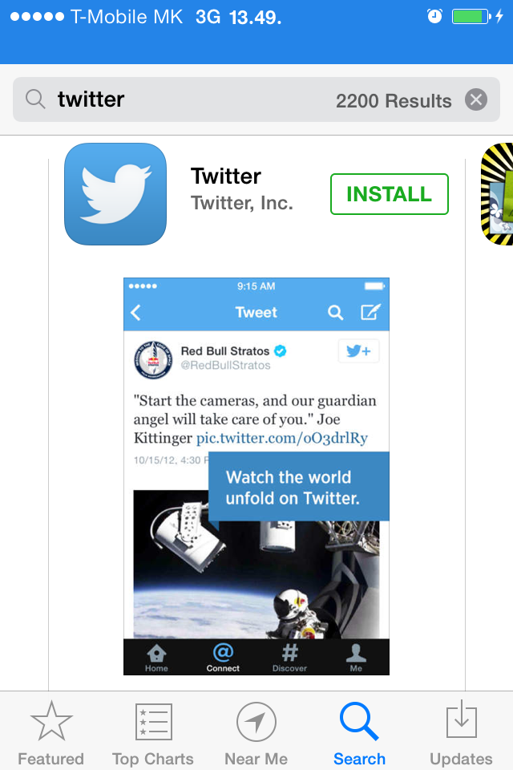
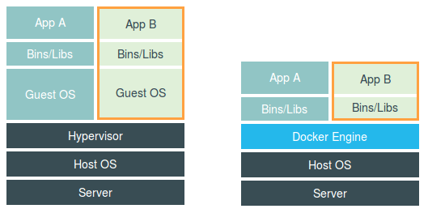
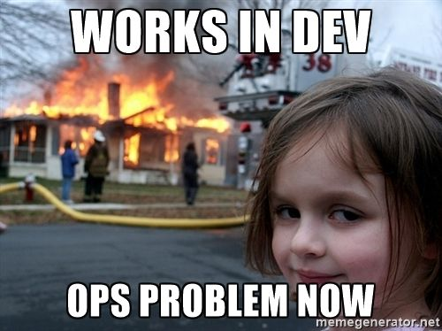

Docker 101
A brief introduction
#whoami
Marco, DevOps Tech Lead, Platform Operations
Push buttons, talk to people
...even at the same time!
Why this ABC?
I think this technology is going to change the game
I feel like I owed something to ContactLab
Aaand... it's a challenge :)
Nerd Alert!
I'll make extensive use of:
- techy terms
- obscure memes
- console commands
- whales
So...
Docker is all about running applications.
"traditional" installation
 a "modern" way
 What about us?
A server app is close to a "traditional" one.
Before we roll out a new app, our team:
- deploy a server OS (typically in a VM)
- install packages - java, mysql, apache, etc.
- bring in the app
- (a few other dozen steps)
- connect it to the outside world
Does it look reasonable?
It is not
It's so wrong I don't even know where to start
The app is forever bound to its server
It's a long, error-prone process
2-6 hours per server thrown away if you thrash the server
little room for automation
Enter Docker!
Serving apps, the "modern" way
Containers are self-contained applications environments
Images are generalized container "templates"
Registries is where images are organized in

Solving the issue in two steps
- We build an image with our complete application:
FROM nginx COPY hello_world.html /usr/share/nginx/html WORKDIR /usr/share/nginx/html CMD nginx -g 'daemon off;' - We run a container based on that image
docker run --name myappcontainer -p 80:80 myappimage
That's nice and all, but... why the hype?
“Great sales pitch, dude.”
- The Audience
Stay with me - the fun starts here!
Containerized applications have a TON of benefits!
Let's mention a few...
1. We save lots of money
Far better (30%+) hardware handling
Standardized operations and tools
2. Closer to cloud-ready
Each cloud provider do the same things in different ways
We need to abstract from vendors specifications
3. "It works on my machine!" is a thing now
Who needs Saray when you can use the real thing?
4. Faster... everything!
Dev: Testing new version and components "swapping" containers in my app
Staging: automating tests with "pseudo-real" data
Prod: create new containers with new version, route traffic, observe behavior
5. Scaling is caring
A "reactive" way to manage dynamic workloads
High Availability for traditional applications
It's not all rainbows and unicorns
This is another layer of complexity
Things will break in creative ways
Requires app to be smart(er)
Demo time!
A little digression
just to get back on track
To devs, infrastructure is a black box
To ops, applications are a black box

This needs to end!
The delivery of applications is a shared responsibility
Stop worrying on the "how" and increasingly put weight on the "what"
Where do we go from here?
We're just at the beginning of this (r)evolution
New users
- Want more technical courses? I'm all for it
- Help me find you a use case
- Talk to other people for hints on how to solve common issues
Advanced users
- Request access to our kubernetes cluster!
- Refactor your workflow to adopt containers
- Let's build together standard practises